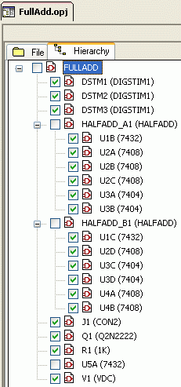
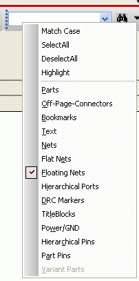
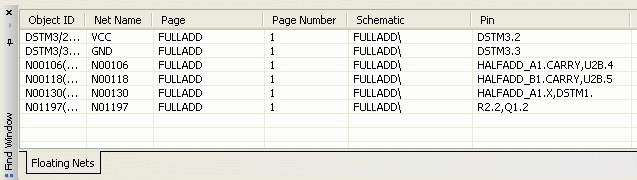

A test bench is
like any other new project created in Capture. When you
create a test bench, it is listed under the
TestBenches node in the project manager of the
master project. All simulation profiles and parameters or
variables in the master project are copied by default to
the test bench project. The components in the different
schematics are grayed out. You can choose to activate the
components to create a partial design.
You might need
to add terminations and other parts to the partial design
of the test bench because a test bench design must be
complete in itself. You can also make edits to your test
bench to prepare it for simulation by adding a stimulus or
simulation profiles. You can simulate a test bench even if
the master design is not a PSpice project. If the master
project is a PSpice project, the test bench can inherit the
simulation profiles in the master project.
Creating a Test Bench
- Select the DSN file in the Project Manager
-
Choose
Tools – Test Bench –
Create Test Bench
The Test Bench field appears. - Enter a name in the Enter Test Bench Name field.
You can set a
default test bench name by adding the Default Test
Bench Name property in the [TEST BENCH]
section of capture.ini. For example, to set
the default test bench name to MyTestBench,
add the following section in capture.ini :
[TEST
BENCH]
Default
Test Bench Name=MyTestBench
-
Click
OK.
The test bench is added under TestBenches in the Project Manager. The created test bench contains all the designs in the master project.
The components in the schematic pages of the test bench are grayed out. You need to add components to the test bench to be able to work on a partial design.
Note: You can activate a test bench by right-clicking on the test bench in the Project Manager under Test Benches and choosing Make Active.
Activating Components
You can activate
components in a test bench by using any one of the options;
context-menu for selected parts in the master design,
conext-menu for selected parts in the test bench design, or
from the hierarchy editor.
To activate
components from the master design:
- Select the components in the master design.
-
Right-click
and choose Test B ench –
Add Part(s) to Active TestBench.
To activate components from the test bench design:
Select the components in the test bench design.
Right-click and choose TestBench – Add Part(s) to Self .
To activate components using the hierarchy editor, check the components to be added in the hierarchy editor of the master design, as shown in the figure.

Similarly, you can inactivate a component from the test bench design from the context-menu or the hierarchy editor. Capture will ignore all components that are inactive. As a result, these inactive components will not be processed, for example, for simulation.
When you activate only a portion of the design, many nets might be floating because they are not terminated. You can easily resolve this problem by making a floating net search. To perform this search: - Select the test bench design in Capture
-
From the
search menu, select Floating Nets as shown in
the figure
 -
Click the Find
button.
All the floating nets requiring terminators are listed in the Floating Nets tab of the Find Window.
 - Double-click a row in the Find Window to select it in the design.